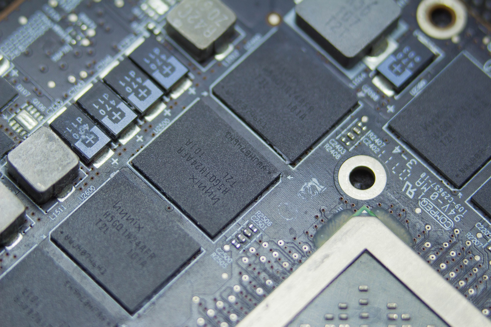
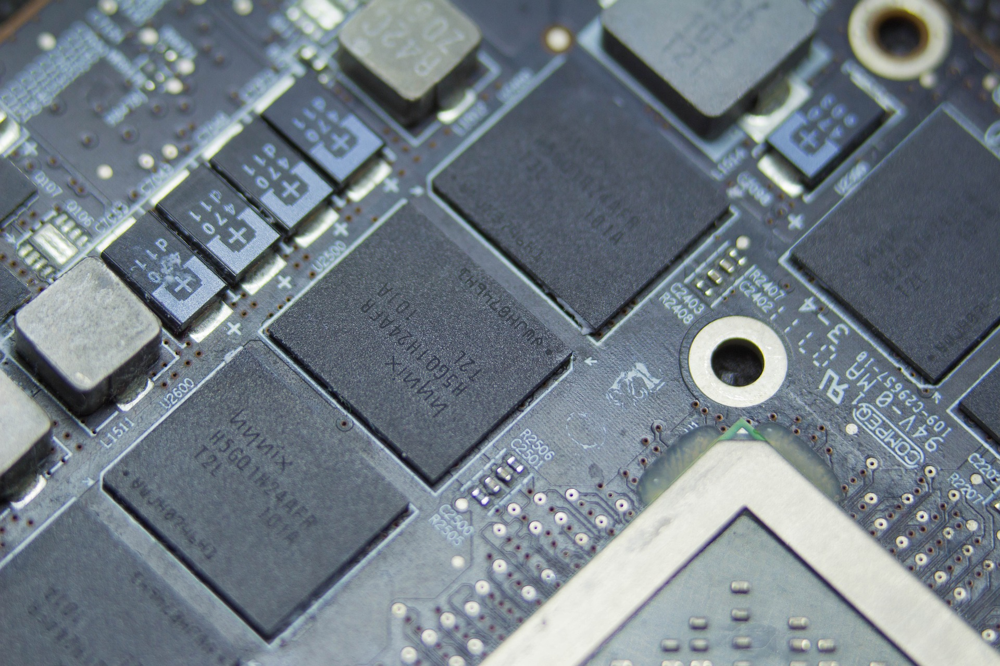

Présentation
Je m'appelle Hugo Fossé, et je suis technicien informatique. En plus de mon travail, je suis passionné par la production musicale avec le logiciel FL Studio. J'aime également travailler sur des projets de création de sites web et de programmes informatiques, principalement en C# et C++. Sur mon temps libre, je déploie et maintient plusieurs serveurs informatiques comme des serveurs web, de jeux et de stockage. Mon objectif est de continuer à développer mes compétences et d'explorer de nouvelles technologies pour être à la pointe dans mon domaine.
Sur mon site, vous pourrez retrouver mon CV détaillé ainsi que des informations complémentaires sur moi, mes compétences et mes passions. Vous pourrez également me contacter facilement grâce à un espace dédié à cet effet sur mon site. N'hésitez pas à explorer mon site pour en savoir plus !